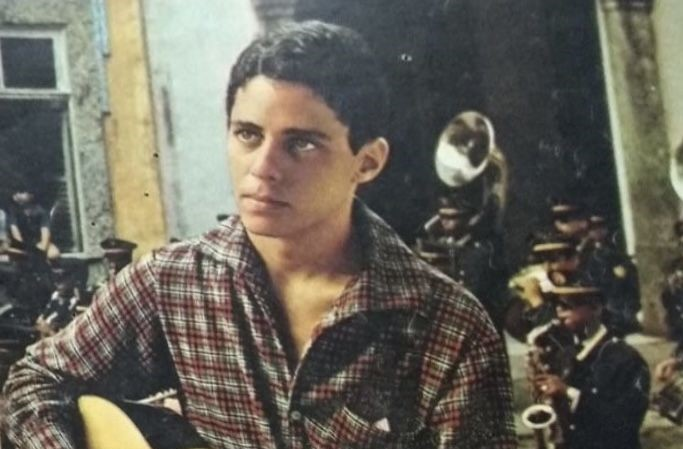

Chico Buarque
Utilizou metáforas e composições críticas para falar sobre repressão e liberdade.
Obras: Apesar de Você (1970) e Cálice (1973), em parceria com Gilberto Gil.
Quando cantar também era uma forma de lutar pela liberdade.
CONHECER A HISTÓRIAA ditadura militar brasileira começou em 1964 e terminou em 1985. Durante esse período, o país viveu restrições às liberdades políticas e de expressão. A partir do Ato Institucional nº 5 (AI-5), em 1968, a censura e a repressão se intensificaram.
A Música Popular Brasileira (MPB) tornou-se um importante espaço de manifestação artística e política. Muitos compositores utilizaram metáforas, poesias e mensagens indiretas para criticar o autoritarismo, a violência e a falta de liberdade.
Canções eram analisadas pelos órgãos de censura e podiam ser proibidas de tocar nas rádios ou de serem apresentadas publicamente. Alguns artistas foram perseguidos, presos ou obrigados a deixar o país.
Utilizou metáforas e composições críticas para falar sobre repressão e liberdade.
Obras: Apesar de Você (1970) e Cálice (1973), em parceria com Gilberto Gil.
Compositor ligado à música de protesto e à mobilização política.
Obra: Pra Não Dizer que Não Falei das Flores (1968).
Um dos principais nomes do Tropicalismo, movimento que revolucionou a música brasileira.
Obra: Alegria, Alegria (1967).
Artista tropicalista que enfrentou a repressão e chegou a ser exilado.
Obra: Aquele Abraço (1969).
O Tropicalismo surgiu em 1967 e misturou elementos da música brasileira com rock, guitarras elétricas, cultura pop e experimentação artística. Seus representantes questionavam padrões culturais e políticos.
Além do Tropicalismo, festivais de música televisionados ajudaram a divulgar canções de protesto e a aproximar artistas do público.


A MPB daquele período deixou um legado histórico. Suas músicas preservam a memória da resistência cultural, demonstram a importância da liberdade de expressão e continuam sendo estudadas por novas gerações.